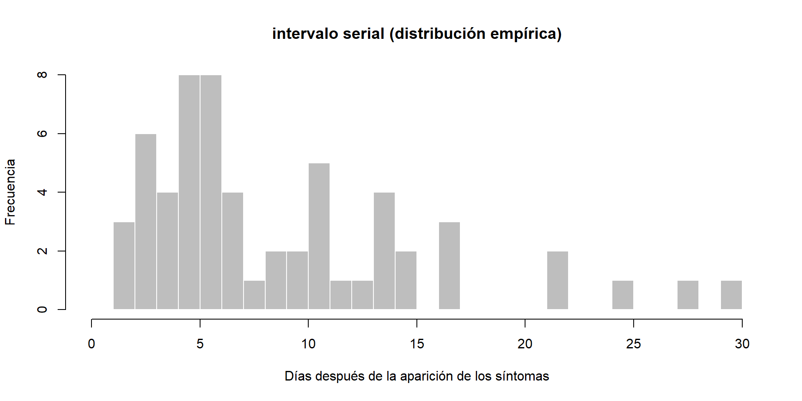
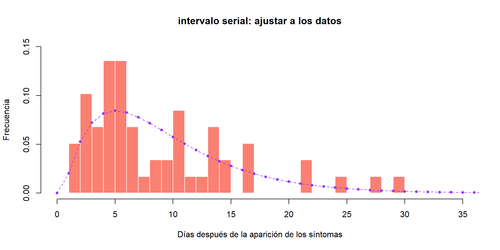

Estadísticas y métodos para el análisis de la respuesta a brotes.
Día 2
Agenda:
Presentación del equipo de talleristas
Introducción a la biología del virus del Ébola
Taller
Discusión
Contexto:
La enfermedad apareció en 1976 en brotes casi simultáneos en la República Democrática del Congo (RDC) y Sudán del Sur
Entre 1979 y 1994 no se detectaron casos ni brotes
Desde 1994 se han reconocido brotes con una frecuencia cada vez mayor
El mayor brote hasta la fecha tuvo lugar en África Occidental entre marzo de 2014 y junio de 2016
Brotes del virusdel ébola
doi: 10.1038/s41572-020-0147-3.
Instrucciones del taller en cada grupo (5min)
Introducción
Esta práctica simula la evaluación temprana y la reconstrucción de un brote de enfermedad por el virus del Ébola (EVE).
Introduce varios aspectos del análisis de la etapa inicial de un brote, incluida la probabilidad de muerte en los casos (CFR por sus siglas en inglés de Case Fatality Ratio), curvas epidemiológicas, rastreo de contactos y proyecciones de la tasa de duplicación de los casos y el número reproductivo instantáneo (Rt).
Objetivos
Identificar los parámetros necesarios en casos de transmisión de enfermedades infecciosas de persona a persona.
Estimar e interpretar la tasa de crecimiento y el tiempo en que se duplica la epidemia.
Estimar el intervalo serial a partir de los datos pareados de individuos infectantes e individuos infectados.
Estimar e interpretar el número de reproducción instantáneo de la epidemia
Estimar la tasa de letalidad (CFR)
Calcular y graficar la incidencia
Conceptos básicos a desarrollar:
Transmisión de enfermedades infecciosas de persona a persona
Intervalo serial
Número reproductivo efectivo
Radio de letalidad (IFR, CFR)
Tasa de crecimiento y duplicación
Incidencia
Situación a analizar
Un nuevo brote de EVE en un país ficticio de África occidental
Se ha notificado un nuevo brote de EVE en un país ficticio de África occidental.
El Ministerio de Salud se encarga de coordinar la respuesta al brote, y lo ha contratado a usted como consultor en análisis epidémico para informar la respuesta en tiempo real.
CFR: Es la proporción de casos reportados que mueren a causa de la infección
\(\rightarrow\) CFR se puede calcular con los datos de vigilancia epidemiológica
IFR: Es la proporción de infecciones (detectadas y no detectadas) que mueren a causa de la infección
\(\rightarrow\) IFR sólo se puede calcular con datos de vigilancia epidemiológica + información adicional como estudios prevalencia
Incidencia
Número de casos nuevos en un período de tiempo determinado
Se basa en las fechas, por lo general de inicio de los síntomas.
Se afecta por los rezagos de reporte (e.g. quienes iniciaron síntomas ayer sólo van a ser reportados algunos días después)
Incidencia
Miremos las curvas de incidencia
El primer paso del análisis es descriptivo: queremos dibujar una epicurva o curva epidemiológica. Esto permite visualizar la incidencia a lo largo del tiempo por fecha de inicio de los síntomas.
La primera pregunta que queremos responder es: ¿qué tan grave es la situación?
<incidence object>
[166 cases from days 2014-04-07 to 2014-06-29]
$counts: matrix with 84 rows and 1 columns
$n: 166 cases in total
$dates: 84 dates marking the left-side of bins
$interval: 1 day
$timespan: 84 days
$cumulative: FALSE
¿Qué observa?
Incidencia diaria según fecha de inicio de síntomas
plot(i_daily, border ="black")
Pregunta
¿Cuál es la mejor clasificación de la epidemia a partir de la información de la curva epidémica?
A. Fuente común puntual
B. Fuente común continua
C. Fuente común intermitente
D. Propagada (persona a persona)
Pregunta
Su jefe le pregunta, ¿en qué fecha inició síntomas el primer caso (caso iíndice)?
Usted diría que fue…
Instrucciones
Otro problema es que puede ser difícil interpretar las tendencias al observar la incidencia diaria
<incidence object>
[166 cases from days 2014-04-07 to 2014-06-30]
[166 cases from ISO weeks 2014-W15 to 2014-W27]
$counts: matrix with 13 rows and 1 columns
$n: 166 cases in total
$dates: 13 dates marking the left-side of bins
$interval: 7 days
$timespan: 85 days
$cumulative: FALSE
¿Qué opina de esta nueva gráfica?
Estimación de la tasa de crecimiento mediante un modelo log-lineal
Es probablemente el modelo de incidencia más simple
Modelo de regresión lineal sobre incidencias transformadas logarítmicamente
Para ello trabajaremos con incidencia semanal, para evitar tener demasiados problemas con incidencia cero (que no se pueden registrar).
Ajuste un modelo log-lineal a los datos de incidencia
f <- incidence::fit(i_weekly)f
<incidence_fit object>
$model: regression of log-incidence over time
$info: list containing the following items:
$r (daily growth rate):
[1] 0.04145251
$r.conf (confidence interval):
2.5 % 97.5 %
[1,] 0.02582225 0.05708276
$doubling (doubling time in days):
[1] 16.72148
$doubling.conf (confidence interval):
2.5 % 97.5 %
[1,] 12.14285 26.84302
$pred: data.frame of incidence predictions (12 rows, 5 columns)
¿Qué le dicen estos datos?
Curva epidémica con modelo log lineal
plot(i_weekly, fit = f)
Mirando la gráfica y el ajuste, ¿cree que este es un ajuste razonable?
Instrucciones
Utilizando la gráfica del logaritmo (incidencia) que graficó anteriormente, y pensando en por qué el crecimiento exponencial no puede observarse en las últimas semanas, elija una fecha límite y ajuste el modelo logarítmico lineal a una sección adecuada de la epicurva donde crea que puede estimar de manera más confiable la tasa de crecimiento r, y el tiempo de duplicación.
Es posible que desee examinar cuánto tiempo después de la aparición de los síntomas los casos son hospitalizados
Curva epidémica con modelo log lineal
¿Cuántas semanas debe descartar al final de la epicurva?
Trunca la incidencia semanal según las semanas descartadas
n_weeks_to_discard <-2min_date <-min(i_daily$dates)max_date <-max(i_daily$dates) - n_weeks_to_discard *7# Para truncar la incidencia semanal i_weekly_trunc <-subset(i_weekly, from = min_date, to = max_date) # descarte las últimas semanas de datos# incidencia diaria truncada.#No la usamos para la regresión lineal pero se puede usar más adelantei_daily_trunc <-subset(i_daily, from = min_date, to = max_date) # eliminamos las últimas dos semanas de datos
Curva epidémica con modelo log lineal
Vuelva a montar y a graficar el modelo logarítmico lineal, pero utilizando los datos truncados i_weekly_trunc.
f <- incidence::fit(i_weekly_trunc)f
<incidence_fit object>
$model: regression of log-incidence over time
$info: list containing the following items:
$r (daily growth rate):
[1] 0.05224047
$r.conf (confidence interval):
2.5 % 97.5 %
[1,] 0.03323024 0.0712507
$doubling (doubling time in days):
[1] 13.2684
$doubling.conf (confidence interval):
2.5 % 97.5 %
[1,] 9.728286 20.85893
$pred: data.frame of incidence predictions (10 rows, 5 columns)
plot(i_weekly_trunc, fit = f)
Mirando la gráfica y el ajuste, ¿cree que este es un ajuste más razonable comparado con el anterior?
Curva epidémica con modelo log lineal
Observe las estadísticas resumidas de su ajuste:
summary(f$model)
Call:
stats::lm(formula = log(counts) ~ dates.x, data = df)
Residuals:
Min 1Q Median 3Q Max
-0.73474 -0.31655 -0.03211 0.41798 0.65311
Coefficients:
Estimate Std. Error t value Pr(>|t|)
(Intercept) 0.186219 0.332752 0.560 0.591049
dates.x 0.052240 0.008244 6.337 0.000224 ***
---
Signif. codes: 0 '***' 0.001 '**' 0.01 '*' 0.05 '.' 0.1 ' ' 1
Residual standard error: 0.5241 on 8 degrees of freedom
Multiple R-squared: 0.8339, Adjusted R-squared: 0.8131
F-statistic: 40.16 on 1 and 8 DF, p-value: 0.0002237
¿El modelo se ajusta bien a los datos?
Curva epidémica con modelo log lineal
Estimacion de la tasa de crecimiento
¿Cuál es la tasa de crecimiento estimada de la epidemia?, ¿Cómo lo interpreta?
# intervalo de confianza:doubling_time_days_CI <-log(2) /rev(daily_growth_rate_CI)doubling_time_days_CI
[1] 9.728286 20.858930
Generar red de contactos con epicontacts
El rastreo de contactos es uno de los pilares de la respuesta a un brote.
Procedimientos claves:
Definir tiempo de rastreo: para el ejemplo de ébola se vigilan durante 21 días (el límite superior del período de incubación)
Definir base de datos a usar: para el ejemplo base de datos completa o base inicial
Paquete a usar: “epicontacts”
Función y argumentos:
make_epicontacts()
Generar red de contactos con epicontacts
epi_contacts <-make_epicontacts(linelist_clean, contacts, id ="case_id",from ="infector",to ="case_id")epi_contacts
/// Epidemiological Contacts //
// class: epicontacts
// 166 cases in linelist; 60 contacts; non directed
// linelist
# A tibble: 166 × 11
id generation date_of_infection date_of_onset date_of_hospitalisation
<chr> <dbl> <date> <date> <date>
1 d1fafd 0 NA 2014-04-07 2014-04-17
2 53371b 1 2014-04-09 2014-04-15 2014-04-20
3 f5c3d8 1 2014-04-18 2014-04-21 2014-04-25
4 6c286a 2 NA 2014-04-27 2014-04-27
5 0f58c4 2 2014-04-22 2014-04-26 2014-04-29
6 49731d 0 2014-03-19 2014-04-25 2014-05-02
7 f9149b 3 NA 2014-05-03 2014-05-04
8 881bd4 3 2014-04-26 2014-05-01 2014-05-05
9 e66fa4 2 NA 2014-04-21 2014-05-06
10 20b688 3 NA 2014-05-05 2014-05-06
# ℹ 156 more rows
# ℹ 6 more variables: date_of_outcome <date>, outcome <fct>, gender <fct>,
# hospital <fct>, lon <dbl>, lat <dbl>
// contacts
# A tibble: 60 × 3
from to source
<chr> <chr> <chr>
1 d1fafd 53371b other
2 f5c3d8 0f58c4 other
3 0f58c4 881bd4 other
4 f5c3d8 d58402 other
5 20b688 d8a13d funeral
6 2ae019 a3c8b8 other
7 20b688 974bc1 funeral
8 2ae019 72b905 funeral
9 40ae5f b8f2fd funeral
10 f1f60f 09e386 other
# ℹ 50 more rows
Generar red de contactos con epicontacts
Usted puede graficar fácilmente estos contactos, pero con un poco de ajuste (ver ?vis_epicontacts). Puede personalizar, por ejemplo, símbolos por género y colores de flechas por fuente de exposición (u otras variables de interés):
funeral other
20 40
Red de contactos
Instrucciones
Usando la función match ( ver ?match ) verifique que los contactos visualizados sean realmente casos.
Una vez se asegure de que todos estos son casos, mire la red: ¿Parece que hay superpropagación (transmisión heterogénea)?
Modelo de proceso de ramificación
La transmisibilidad de la enfermedad puede evaluarse mediante la estimación del número de reproducción (R), definido como el número esperado de casos secundarios por caso infectado.
En las primeras etapas de un brote, y asumiendo una gran población sin inmunidad, esta cantidad corresponde al número de reproducción básico R(0) es decir, en una gran población totalmente susceptible.
Modelo de proceso de ramificación
El paquete EpiEstim implementa una estimación bayesiana del número reproductivo, utilizando las fechas de inicio de los síntomas y la distribución del intervalo serial
Descripción de la incidencia en un día dado como la distribución de Poisson, con una media determinada por la fuerza total de infección en ese día:
\[
I_t \sim Poisson(\lambda_t)
\]
Modelo de proceso de ramificación
Teniendo en cuenta que \(R\)es el número de reproducción y \(w\) la distribución del intervalo serial discreta, la fuerza de infección se define como:
\[
\lambda_t = R \sum_{s=1}^{t} I_s w(t-s)
\]
Verosimilitud (Likelihood)
Una medida relativa de ajuste entre los datos y el modelo. Se define como una función de R:
Ajustar una distribución discreta al intervalo serial
Función y argumentos:
get_pairwise(), argumentos relevantes “x” y “attribute” los cuales corresponden a la base y a la variable que contenga las fechas para el cálculo de intervalos.
Posteriormente puedes graficar la frecuencia que hay del número de días, y observar la distribución empírica que sigue.
Ajustar una distribución discreta al intervalo serial
Dado que los datos se recopilaron sobre pares de individuos infecciosos e infectados, esto debería ser suficiente para estimar la distribución del intervalo serial
Si ese no fuera el caso, que hubiera hecho para obtener esta estimación?
Utilice la función get_pairwise para extraer el intervalo serial
Ajustar una distribución discreta al intervalo serial
Utilice la función get_pairwise para extraer el intervalo serial
Min. 1st Qu. Median Mean 3rd Qu. Max. NA's
2.000 5.000 7.000 9.254 12.500 30.000 1
Ajustar una distribución discreta al intervalo serial
hist(si_obs, breaks =0:30,xlab ="Días después de la aparición de los síntomas", ylab ="Frecuencia",main ="intervalo serial (distribución empírica)",col ="grey", border ="white")

¿Qué opina de esta distribución?
Ajustar una distribución discreta al intervalo serial
Estas distribuciones además pueden ajustarse a varios modelos paramétricos, siendo el más frecuente el modelo gamma, de la siguiente forma:
Función y argumentos:
fit_disc_gamma(x), donde x corresponde a las observaciones de los intervalos seriales
Ajuste a distribucion gamma
Use la función fit_disc_gamma del paquete epitrix para ajustar estos datos a una distribución Gamma de valores discretos
si_fit contiene información diversa sobre los retrasos ajustados, incluida la distribución estimada.
Puede comparar esta distribución con los datos empíricos en la siguiente tabla:
si <- si_fit$distributionsi
A discrete distribution
name: gamma
parameters:
shape: 2.0622770570919
scale: 4.24405104660505
Ajuste a distribucion gamma
## compare fitted distributionhist(si_obs, xlab ="Días después de la aparición de los síntomas", ylab ="Frecuencia",main ="intervalo serial: ajustar a los datos", col ="salmon", border ="white",50, ylim =c(0, 0.15), freq =FALSE, breaks =0:35)points(0:60, si$d(0:60), col ="#9933ff", pch =20)points(0:60, si$d(0:60), col ="#9933ff", type ="l", lty =2)

Estimación del número reproductivo instantáneo (Rt)
Cuando la suposición de que (R) es constante en el tiempo se vuelve insostenible, una alternativa es estimar la transmisibilidad variable en el tiempo utilizando el número de reproducción instantánea (Rt).
Este enfoque se implementa en el paquete `EpiEstim.`
Estima (Rt) para ventanas de tiempo personalizadas (el valor predeterminado es una sucesión de ventanas de tiempo deslizantes), utilizando la probabilidad de Poisson
Estimación del número reproductivo instantáneo (Rt)
A continuación, estimamos la transmisibilidad para ventanas de tiempo deslizantes de 1 semana (el valor predeterminado de estimate_R):
config <-make_config(mean_si = si_fit$mu, # media de la distribución si estimada anteriormentestd_si = si_fit$sd, # desviación estándar de la distribución si estimada anteriormentet_start =2, # día de inicio de la ventana de tiempot_end =length(i_daily_trunc$counts)) # último día de la ventana de tiempo
config =make_config(list(mean_si = si_fit$mu, std_si = si_fit$sd)) # t_start y t_end se configuran automáticamente para estimar R en ventanas deslizantes para 1 semana de forma predeterminada.
Estimacion del número reproductivo instantáneo (Rt)
# use estimate_R using method = "parametric_si"Rt <-estimate_R(i_daily_trunc, method ="parametric_si", si_data = si_data,config = config)# mire las estimaciones de Rt más recientes:tail(Rt$R[, c("t_start", "t_end", "Median(R)", "Quantile.0.025(R)", "Quantile.0.975(R)")])